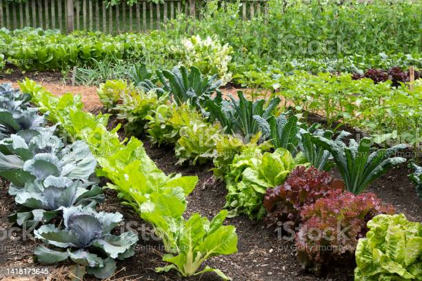
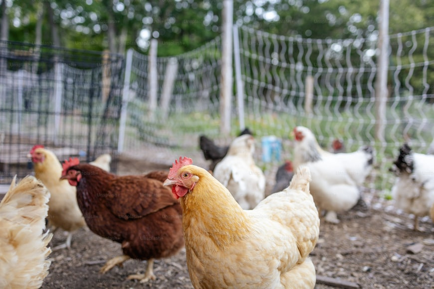

My name is Alfred Waititu.An ambitious youth trying to learn the basics of web development.Actually, this is my first webpage I have developed.
I have just completed the basic education curriculum. Here we used call it the 8-4-4 system, though due to changing times its now it's called the CBC.I studied in Kagumo high school for the secondary education. My learning journey there was not seemless; it had quite some challenges but I managed to triumph.
I always aspired to become computer literate since I was a child but then I had no means to pursue my desire since I had no knowledge or tools to start with. I'm glad that after quite some time, I have come to get a chance to pursue my desire. This is because DirectEd Bootcamp has come and gave me a rare chance to pursue my ambition. They have given me an opportunity to learn web designing at an early stage in my life, thus I will have time to perfect this art.Their curriculum is the best I have seen so far. It's tough but it makes you learn and get skills that match the real world outlook. So you have to be strong so that you can reap the benefits of learning web designing. I'm grateful to you DirectEd for giving me this opportunity.
I wish to share with you a list of my hobbies
playing chess
gardening

riding my bicycle
my bicycle
listening to audio books
I have quite a set of basic skills:
driving
gardening and landscaping
poutry management

My miniprojects
In my last two weeks learning sprint, I managed to learn HTML,Tailwindcss and normal CSS.
Thereafter, I created some mini-projects to practise the skills I have learnt. Hereby is the list of my mini-projects:
html little tacos shop
little tacos shop with css
tailwindcss acme rockets
HTML little tacos shop
In this project I created a webpage for the little tacos shop. I largely just used HTML with little CSS.
The little tacos shop menu
The store open hours
About the little tacos shop
Contact-us form
CSS project on little tacos shop
In this project, I build up on the HTML little tacos project. I applied CSS largely to style this webpage. With CSS I was able to give this webpage an aesthetic look. This webpage contained:
The little tacos shop menu
The store open hours
About the little tacos shop
Contact-us form
Tailwindcss Acme Rockets
In this project, I built a webpage for Acme Rockets. I used tailwindcss to style this webpage. The webpage displayed the: